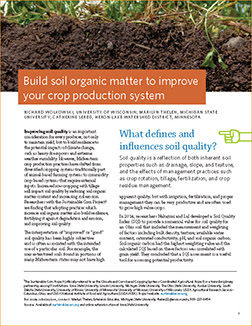
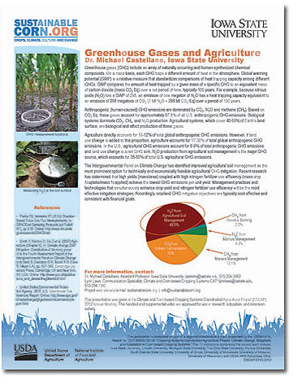

Fact Sheets
Build Soil Organic Matter to Improve Your Crop Production System This publication was written by extension educators working in the Corn Belt. It's a great resource for farmers, teachers, extension educators and agricultural advisers. Just click on the image to view and download the 8-page publication. |
 |
The following fact sheets serve to provide some of the science behind creating more resilient corn-based cropping systems. These were originally presented as "Speed Science handouts" at this project's 2012 annual conference in Wooster, Ohio. Videos and transcripts of the 10 minute "Speed Science" presentations by our team members can be found HERE. These fact sheets and videos are approved for use in educational, research and extension settings. |
 |
No-Tillage Impacts on Soil Carbon, Nitrogen and Water |
| Warren A. Dick, Ph.D., The Ohio State University |
Soil Nitrogen Cycle |
| John E. Sawyer, Ph.D., Iowa State University |
Nitrogen Sensing and Impact on Carbon, Nitrogen and Water |
| Peter Scharf, Ph.D., University of Missouri |
Soil Organic Carbon Cycle |
| Sasha Kravchenko, Ph.D., Michigan State University |
Drainage Water Management |
| Jane Frankenberger, Ph.D., Purdue University |
The Water Balance |
| Laura Bowling, Ph.D., Purdue University |
Cover Crops |
| Eileen J. Kladivko, Ph.D., Purdue University |
Integrated Pest Management |
| Daren Mueller, Ph.D. and Nathan Bestor, IPM assistant, Iowa State University |
Climate and Climate Change |
| Raymond W. Arritt, Ph.D., Iowa State University |
Greenhouse Gases and Agriculture |
| Michael Castellano, Ph.D., Iowa State University |
Climate Change Beliefs, Concerns and Support for Adaptation and Mitigation among Corn Belt Farmers |
| J. Gordon Arbuckle Jr., Ph.D.*, Iowa State University. |
* The farmer survey noted in this fact sheet was a collaborative effort between several social scientists from various universities: John Tyndall, Tricia Knoot and Lois Wright Morton, Iowa State University; Linda Prokopy, Purdue University; and Tonya Haigh and Cody Knutson, University of Nebraska.